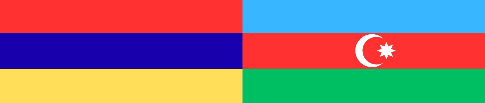
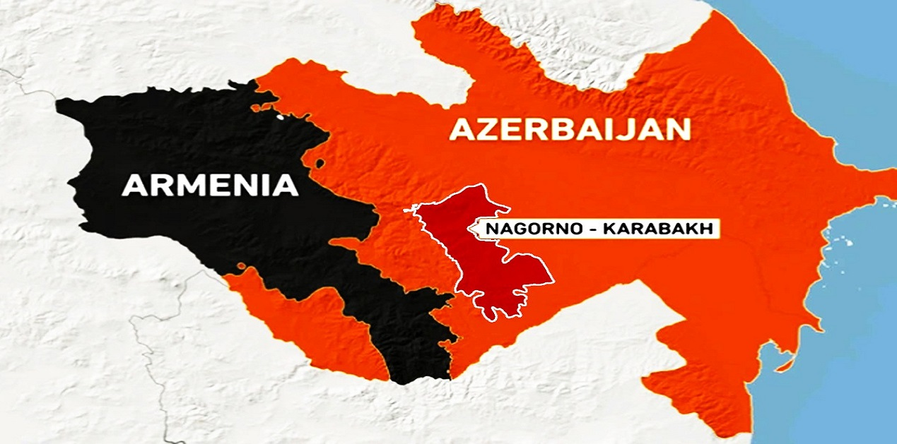

Guerra Armenia-Azerbaijão
A guerra entre Armênia e Azerbaijão tem origem em disputas históricas pelo território de Nagorno-Karabakh, uma região montanhosa localizada dentro do Azerbaijão, mas povoada majoritariamente por armênios étnicos. Durante o período soviético, Moscou manteve o controle da área e reduziu as tensões. Contudo, com a dissolução da União Soviética em 1991, a região declarou independência com apoio da Armênia, o que resultou em uma guerra aberta entre os dois países. Esse primeiro conflito, que durou até 1994, deixou dezenas de milhares de mortos e centenas de milhares de refugiados, além de consolidar o domínio armênio sobre Nagorno-Karabakh e áreas vizinhas.
O Azerbaijão nunca aceitou essa perda territorial e, com apoio militar e econômico da Turquia, fortaleceu-se ao longo dos anos. Em 2020, uma nova guerra de seis semanas foi travada, resultando em vitória azeri e na retomada de partes significativas do território. O cessar-fogo, mediado pela Rússia, manteve tensões, mas não solucionou a questão. Em 2023, o Azerbaijão lançou outra ofensiva rápida, assumindo controle total sobre Nagorno-Karabakh, o que forçou a rendição das autoridades locais e provocou o êxodo da maioria da população armênia.
Esse conflito reflete disputas históricas, identitárias e estratégicas, envolvendo também interesses de potências regionais como Rússia, Turquia e Irã.

System of a Down
A banda System of a Down (SOAD), formada por músicos de origem armênia, tem desempenhado um papel importante ao chamar atenção internacional para o conflito entre Armênia e Azerbaijão. Desde sua formação nos anos 1990, o grupo sempre usou sua música e visibilidade para abordar temas sociais e políticos, incluindo o genocídio armênio de 1915 e, mais recentemente, a situação em Nagorno-Karabakh.
Durante a guerra de 2020, o SOAD interrompeu um longo período sem lançar músicas novas para divulgar duas faixas inéditas: Protect the Land e Genocidal Humanoidz. As canções tinham como objetivo sensibilizar a opinião pública e arrecadar fundos para apoiar vítimas e deslocados do conflito. Toda a renda obtida foi destinada a organizações humanitárias que prestavam auxílio direto à população armênia. Esse gesto reforçou a importância do papel da cultura e da arte como instrumentos de resistência e solidariedade.
Além das músicas, os integrantes da banda também se pronunciaram publicamente em entrevistas e redes sociais, denunciando violações de direitos humanos e pedindo atenção da comunidade internacional. O impacto de suas ações foi significativo, pois ajudou a mobilizar fãs ao redor do mundo, ampliando a visibilidade da causa armênia e pressionando governos e instituições a se posicionarem.